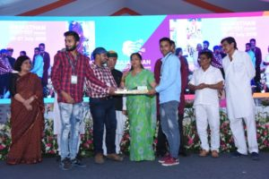

Projects

Environment Friendly and High Quality Bricks (Wricks)
Developing an innovative technology (Patent application submitted) to make low cost, high quality and environmentally sustainable bricks, paver blocks, tiles and panels for low cost housing. The raw materials required in making these products are wastes like waste plastic, crushed demolition waste, fly ash, and marble slurry. No chemical binders or environmentally expensive binding or processing technology is used for achieving strength.Some of the salient achievements of wricks are:
- Funded under Waste Management Technology by DST Govt of India.
- $ 12500/- Award and incubation support from Schulich Business School and York University of Canada.
- Being incubated at IIM Udaipur.
- 10 lakh funding from MHRD Innovation Cell as a part of Smart India Hackathon.
- 5 Lakh funding from IIT Madras Carbon Zero Challenge.
- 5 Lakh funding from PVR Initiative EcoGrant.
- 15 Lakh funding from Rajasthan Digifest.
- Partnered with Udaipur Municipal Corporation to Operate their Construction and Demolition Waste plant.

Solid Waste Management in Savina Vegetable Market
This study focuses on the problems associated with the management of solid waste in the Savina Vegetable Market, which is the largest market in the proposed Smart City Udaipur. An effective system to treat solid waste in an environmentally friendly approach is required to be designed. The main object of this study was to educate people about Solid Waste Management and the benefits of separation at source and to estimate the number of separated wastes for the design of the processing center for the Savina Vegetable Market. In this project total of 27 students of Civil Engineering, 12 street cleaners, and 1 coordinator participated in educating and executing solid waste management in the Savina Vegetable market.
One sample of 3D rendered view in 3ds Max software
Professional training on 3ds software for the students of batch 2013 -17 and batch 2014-18. The college plan was surveyed by students by the total station and all points were connected in auto cad software and 3d view has been generated in 3 ds max software. Following 3d views have been made by the students after this training.
Proposed 3 D view on Ayad River
As the part of Smart City Initiative, a competition has been announced to develop 3D model/drawings for Aayad River. This was very good opportunity to develop virtual reality based animated 3D model for Aayad river project. Around 10 students have been participated in this competition and submit their ideas in UIT.
Revitalization of Walled City Udaipur
The traffic congestion in the walled city progressively becomes the major component which would influence the travel or working experience. Revitalization of Walled City will not only promote heritage conservation but also give a strong boost to tourism and consequent economic upliftment of the local population. In the research process, the behavior questionnaire and traffic flow survey as the first quantitative measurements were used for 2 preparation days and 6 working days. The behavior survey was attempted to identify the possible attitude or perspectives of the people in Walled City, Udaipur. The results show that there are more than 50% of the participants express the view of disagree or ambiguous perspectives about the transportation condition nowadays. Moreover, there is nearly 70 percent of the whole local residents it is difficult for them to finding parking in the Walled City. The traffic flow survey tries to generally calculate the potential transport condition at a different time interval on certain days. In the process, the different collection destination was settled and it ensured the accuracy and usefulness of the statistics to some extent.
ATV
The All-terrain Vehicle (ATV) designed by students of Mechanical Engineering, that participated in the recent national level sporting vehicle building event, BAJA SAE (Society of Automotive Engineers) India-2019. The students of III year Mechanical engineering (Batch 2016-20) are tasked with designing, building, testing, racing and promoting a single seater four wheeler off road vehicle. It follows the BAJA SAE International rules and procedures. The objective is to come up with such designs that can withstand the harshest elements of rough terrain with ease.
Multi-purpose Agriculture Vehicle
The students of third year M.E.( Batch 2018-2022) have designed and Fabricated an multipurpose agriculture Vehicle in the most economical ways possible. The vehicle is powered by an 110 cc hero honda pleasure engine. The vehicle is so designed that it can be used as an grass cutter and can also be used as an small roller for making the lawn even. It can so be used for transporting small loads. The design of the vehicle is kept simple, so that it can be used with different attachments and machines with ease.
HVC
A team with students of III Year Mechanical Engineering(Batch 2016-20) took an ambitious and a challenging project to build a formula hybrid car.The team built a parallel hybrid system, which is powered by a petrol engine and an electric motor. The car is powered by a 390cc KTM-Duke-390 engine and a 48V motor powered by a 21.6Ah Lithium Ion battery. The hybrid system is designed in such a way that the driver can choose the mode of propulsion. This system also charges the primary batteries when the car is driven by the petrol engine. The car uses a CVT transmission for the convenience of driving.
Go-Kart
The students have designed and fabricated a Go-Kart Vehicle.